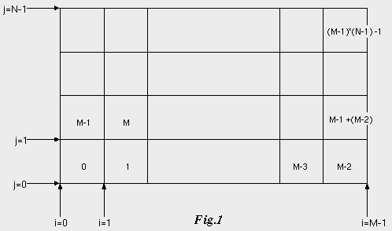
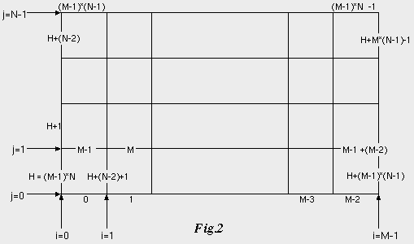

| vfr - Volflex rendering API - |
class vfrMesh2D
Class Hierarchy
Header files
- #include "vfrMesh2D.h"
- vfrMesh2D(const std::string& name VFR_NONAME, const Bool mode= FALSE)
- サイズが 0×0 のvfrMesh2Dオブジェクトをインスタンスする。
- name オブジェクト名
- mode 自己破壊モード
- vfrMesh2D(const int m, const int n, const std::string& name VFR_NONAME, const Bool mode= FALSE)
- サイズが(m)×(n)のvfrMesh2Dオブジェクトをインスタンスする。
サイズが 2×2 よりも小さい場合、0×0 に設定される。
- m メッシュサイズ
- n メッシュサイズ
- name オブジェクト名
- mode 自己破壊モード
- vfrMesh2D(const Point2 s, const std::string& name VFR_NONAME, const Bool mode= FALSE)
- サイズが(s.x)×(s.y)のvfrMesh2Dオブジェクトをインスタンスする。
サイズが 2×2 よりも小さい場合、0×0 に設定される。
- s メッシュサイズ
- name オブジェクト名
- mode 自己破壊モード
- virtual ~vfrMesh2D()
- vfrMesh2Dオブジェクトを破壊する。
public methods / variables
- Bool generateNormals()
- 法線ベクトルタイプ
に応じ、法線ベクトルが確保され自動計算される。成功するとTRUEを返す。
- Bool setMeshSize(const Point2 s)
- メッシュサイズを設定する。
指定されたサイズの頂点が確保される。成功するとTRUEを返す。
サイズが 2×2 よりも小さい場合、0×0 に設定される。
- s メッシュサイズ(s.x)×(s.y)
- Bool setMeshSize(const int m, const int n)
- メッシュサイズを設定する。
指定されたサイズの頂点が確保される。成功するとTRUEを返す。
サイズが 2×2 よりも小さい場合、0×0 に設定される。
- m メッシュサイズ(i方向)
- n メッシュサイズ(j方向)
- Point2 getMeshSize() const
- メッシュサイズを返す
- void renderFeedBack(const unsigned int tid)
- フィードバックテストレンダリングを行う
- tid ターゲットID
- GLsizei getFeedbackSize() const
- フィードバックバッファのサイズを返す
Description
vfrMesh2Dクラスは、2次元のメッシュを表現するオブジェクトクラスである。
指定されたサイズがM×Nの場合、
与えられた頂点集合を(M×N)の格子配列とみなし、
4格子点で構成される四角形を(M-1)×(N-1)個描画する。
vfrMesh2Dクラスは非直交不等間隔格子(Irregular Mesh)であり、
各頂点には3次元の座標が指定できる。
vfrMesh2Dオブジェクトは、サイズを指定する形態でしか
インスタンスを作成する事はできない。
Feedback
フィードバックテストにおいて、vfrMesh2Dオブジェクトは
フィードバックモード属性に応じ、
以下のような結果を返す。
- FB_VERTEX
- 登録されている頂点順に0から付番された番号でフィードバックテストの結果を返す。
- FB_FACE
- Fig.1に示す順序で面に0から(M-1)×(N-1)-1まで付番された番号で
フィードバックテストの結果を返す。

- FB_EDGE
- Fig.2に示す順序でエッジ(辺)に0から付番された番号でフィードバックテストの結果を返す。

横線の辺番号は 0 〜 (M-1)×N -1 、
縦線の辺番号は (M-1)×N 〜 (M-1)×N + M×(N-1) -1 である。